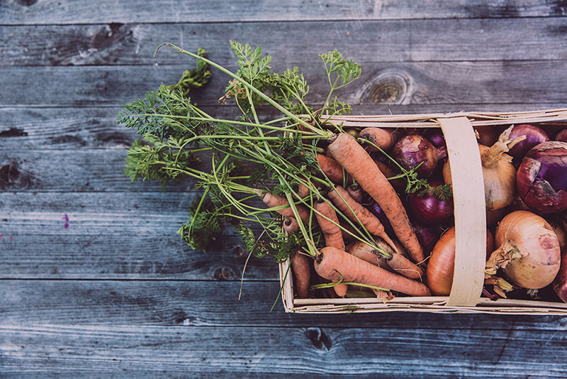
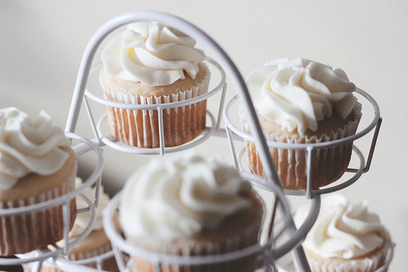

Do you love to eat, cook, or bake?
This Winterim is all about food! We will be learning to make food, cooking and baking whatever we want, and exploring Portland’s culinary scene. For the first two days of the Winterim, we will take cooking classes and brainstorm ideas for our own recipes. Then, we will have an entire day to cook or bake whatever we want. During these first three days, we will also discuss places to go for lunch and expose ourselves to new genres of cuisine. We’ll have fun events, like a cupcake wars competition and a cooking free-for-all. Our last day will be more laid-back. We will go out and have breakfast together, volunteer at a soup kitchen, and finish up with a food tour of Portland. If you love food, this is the Winterim for you!
We will learn about the basics of cooking, develop creativity in our culinary pursuits, and explore Portland’s finest cuisine. We will learn to appreciate new dishes and new genres of food, as well as gain an important skill we will be able to use for the rest of our lives. Participants will improve their skills of communicating and cooperating in a team. Through competition, they will learn to work under pressure and gain confidence in their abilities.
No one should have to go hungry, and we want to do our part to help those who are less fortunate experience the joys of eating and sharing food as well. Therefore, for the service component of our Winterim, we will be volunteering to serve food to the homeless through Blanchet House on our last day.
Day One
The first day, we will begin bright and early at 9 AM at Portland’s Culinary Workshop, where, as a group, we will take a 3 hour private cooking lesson about the principles of cooking. At 12:30 PM, we will have a 90 minute-long lunch as a group. During this lunch, we will brainstorm the kinds of dishes that we’d like to make over the next couple of days. After lunch, we will go to a supermarket and shop for ingredients, ending at 4 PM or earlier, depending on when the group feels like we are done with choosing all of our ingredients.

Day Two
Day 2 is all about desserts! We will be at Portland’s Culinary Workshop in the morning again, to take a class called ‘Dessert Bonanza,’ where we will learn to prepare a variety of unique and delicious desserts. For lunch, we will go to the Downtown food carts and explore the diverse options there. After lunch, we will go to a commercial kitchen and have a ‘Cupcake Wars’ style competition, forming teams to design and bake our own cupcakes using some of the ingredients we bought on the first day.

Day Three
During our third day, the participants will have complete freedom to cook anything they want using the ingredients that they bought the first day. We will be at a commercial kitchen from 9 AM to 4 PM, cooking and eating to our heart’s content. We'll make our own lunch and sample each other's creations.
Day Four
The final day will be more relaxed than the previous three days. We will have a group breakfast from 9 AM to 10 AM and reflect on our experiences over the course of the Winterim. At 11, we will go to Blanchet House and volunteer for two hours, helping to serve food during their lunch service. Finally, we’ll finish up with a fun food tour of Portland, going to about six different food-related places!